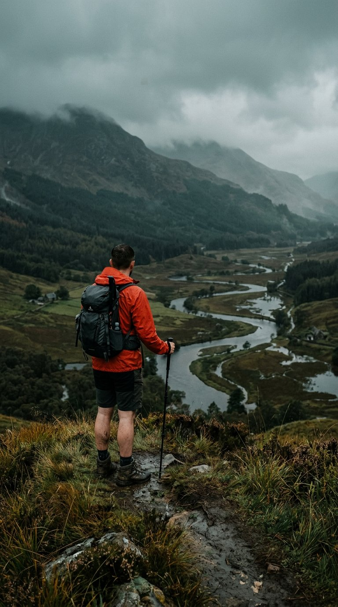
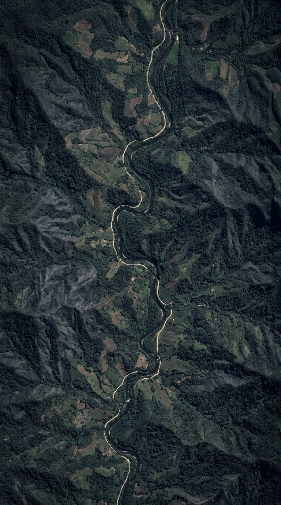

Here's today's situation across all of Rizal.
Barangay San Jose, Rizal · Station SJ-04
Water level at Station SJ-04 has passed the 17-metre critical mark after six hours of continuous rain over the Sierra Madre watershed. Purok 3 and Sitio Wawa are under a pre-emptive evacuation advisory.
Last updated 4 minutes ago · PAGASA & Barangay DRRMO

Field report · 8:02 AM · Verified

Station SJ-04 · updating every 60 seconds
Synced 4 minutes ago · PAGASA & Barangay DRRMO
BASEMAP STYLE
AFFECTED AREAS
TYPE OF HAZARD
WHAT DID YOU SEE?
This sends your location and the current hazard status to the Barangay DRRMO and nearby responders.